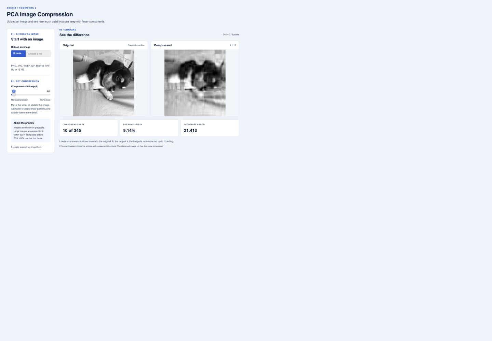

SDS365 / HOMEWORK 2
Image Compression App
Upload an image and choose how many components to keep. Compare the result with the original.
Open the Shiny app
App features
Upload an image. The Browse button is at the top left. A sample image is ready when the app opens.
Choose k. The slider is below the upload button. A smaller k keeps fewer components. A larger k keeps more detail. The image updates as you move the slider.
Compare the images. The original is on the left and the compressed image is on the right. The error values are below them. Lower error means a closer match. On small screens the images stack vertically.
Image settings
The app accepts common image formats such as PNG and JPG up to 15 MB. Images are shown in grayscale. Large images are resized to fit within 600 by 600 pixels before PCA.